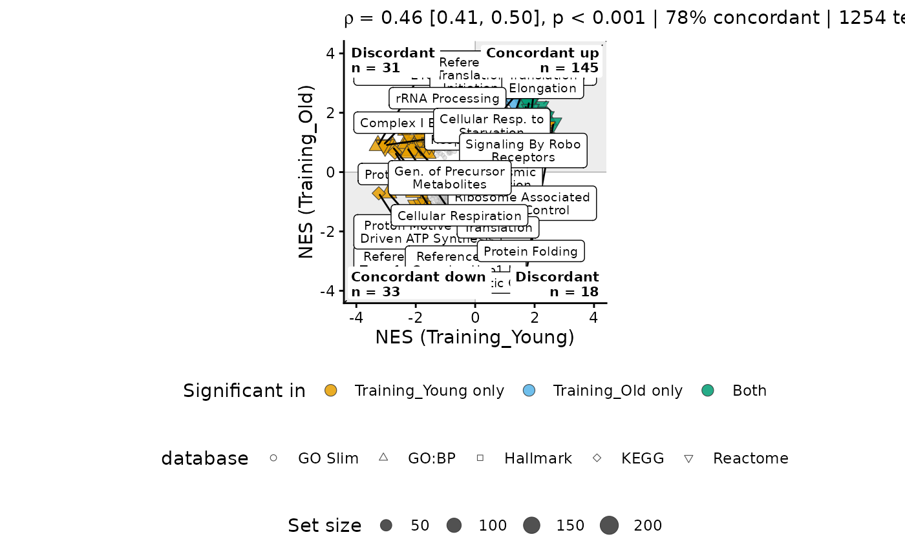
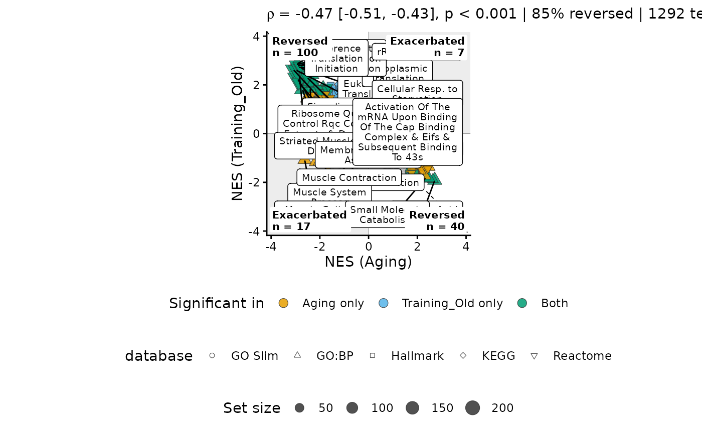

Plots each term's score in one contrast against its score in another. Terms in the top-right and bottom-left quadrants move the same way in both contrasts; terms in the other two move in opposite directions.
Usage
nes_scatter(
enrichment,
x,
y,
comparison = c("concordance", "reversal"),
databases = NULL,
collapse = TRUE,
p_threshold = 0.05,
color_by = "significance",
shape_by = "database",
label_min_size = 15,
max_labels = 20,
theme = volcano_ring_theme()
)Arguments
- enrichment
An enrichment object holding both contrasts.
- x, y
Contrast names for the horizontal and vertical axes.
- comparison
"concordance"or"reversal"; see Description.- databases
Collections to draw from, e.g.
c("Hallmark", "GO Slim");NULL(default) draws from all. Skipped, with a note, when the object has no database labels.- collapse
Hide terms that
dedup()flagged redundant in one contrast and kept as a representative in neither.- p_threshold
Significance cutoff on
padj.- color_by
Column that fills significant points:
"significance"(significant inxonly,yonly, or both), any per-term column such as"database", orNULLfor one colour. Per-term columns are read from thexcontrast.- shape_by
Column mapped to point shape (up to five values), or
NULL.- label_min_size
Smallest gene set that gets a label.
- max_labels
Most labels drawn.
- theme
Output of
volcano_ring_theme(); supplies the base font.
Details
comparison sets the question the figure asks:
"concordance": do two conditions regulate the same pathways, e.g. training in young against training in old? Same-direction quadrants are "concordant", the reference line is \(y = x\), and the subtitle reports the share of significant terms that are concordant."reversal": does one condition undo another, e.g. aging against training? Opposite-direction quadrants are "reversed", same-direction ones "exacerbated", the reference line is \(y = -x\), and the subtitle reports the share reversed.
What is drawn
Points: every term scored in both contrasts. Non-significant terms are small and grey; significant ones are sized by gene-set size and filled by
color_by.Shading: same-direction quadrants are tinted, the others left white.
Corner labels: each quadrant's name and its count of significant terms.
Dashed line: \(y = x\), or \(y = -x\) for a reversal.
Labels: the most significant terms with at least
label_min_sizegenes.Subtitle: Spearman's \(\rho\) across all plotted terms, with a 95% interval when the correlation package is installed, its p-value, the share of significant terms that are concordant (or reversed), and the term counts.
A term is significant in a contrast when its padj is below p_threshold.
If the object has no adjusted p-values at all, nominal p-values are used
and a note says so.
Examples
ex <- as_enrichment(read.csv(system.file("extdata", "examples", "yvo_fgsea.csv.gz",
package = "enrichVolcano"
)))
#> Reading "fgsea" results.
nes_scatter(ex, "Training_Young", "Training_Old")
#> 2 terms appear in only one contrast and are left out.

nes_scatter(ex, "Aging", "Training_Old", comparison = "reversal")
#> 2 terms appear in only one contrast and are left out.
